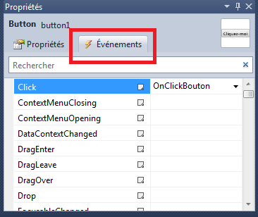
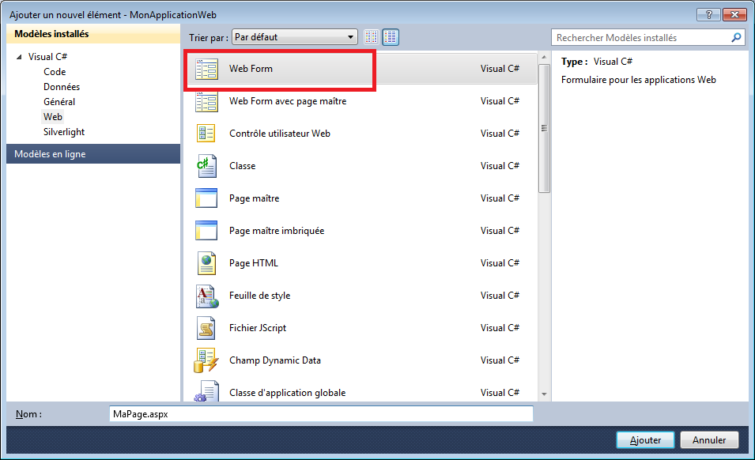
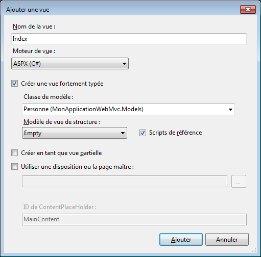
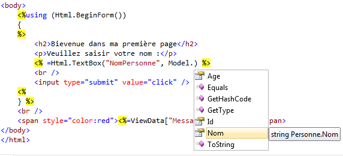
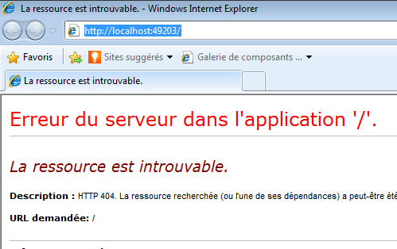
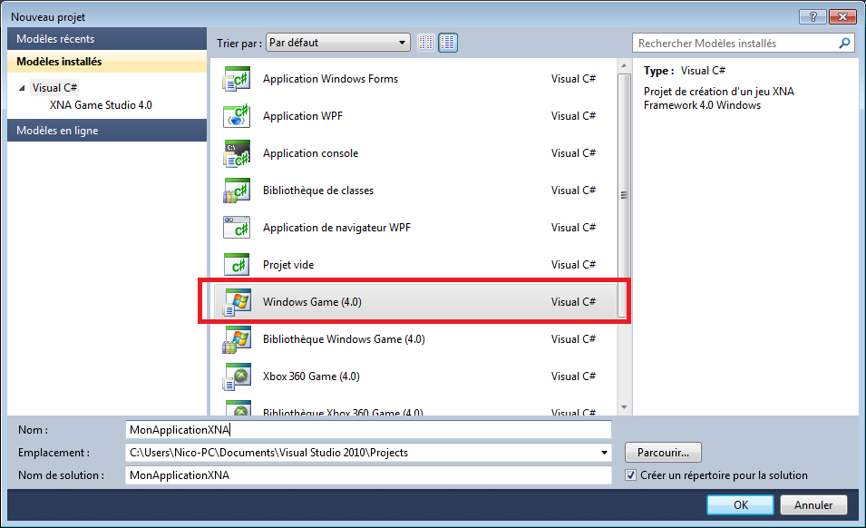

Vous savez quoi ? Avec le C# on peut créer autre chose que des applications consoles !! Dingue non ? Des applications avec des boutons et des menus, ou des sites web et même des jeux. Ces bonnes nouvelles sonnent la fin de nos applications console toutes noires et toutes tristes… mais grâce à ça, c’est le début d’une toute nouvelle aventure. Dans ce chapitre, je vais vous présenter rapidement ce qu’on peut faire d’autre avec le C#. Chaque paragraphe de ce chapitre nécessite un livre entier pour être correctement traité. Aussi, je vais simplement vous montrer ce que l’on peut faire, histoire d’avoir un premier point de départ et de pouvoir décider vers quoi orienter vos prochaines lectures.
J’espère que vous me pardonnerez par avance de ce trop bref aperçu mais je souhaite néanmoins piquer votre curiosité pour vous donner envie d’aller explorer tous ces nouveaux mondes qui s’ouvrent à vous. Il y aura sûrement des notions que vous ne comprendrez pas complètement en fonction des thèmes abordés. Il faudra aller jeter un œil complémentaire sur internet ou attendre un prochaine tutoriel ;) .
Les applications Windows sont ce qu’on appelle des applications clients lourds. Elles s’exécutent directement depuis notre système d’exploitation. Nous pouvons créer toutes sortes d’applications, comme un traitement de texte, une calculatrice, etc.
Nous avons déjà créé une application Windows à travers notre projet console, sauf que nous étions rapidement limités. Avec WPF, nous allons pouvoir créer des applications graphiques avec des boutons, des menus, … Bref, tout ce qui compose une application habituelle. WPF signifie Windows Presentation Foundation. Il s’agit d’une bibliothèque permettant de réaliser des applications graphiques. Ces applications sont dites événementielles car elles réagissent à des événements (clic sur un bouton, redimensionnement de la fenêtre, saisie de texte, etc.)
Pour créer une application WPF, il faut commencer par choisir le type de projet adéquat. Dans Visual C# Express, nous choisissons le modèle « Application WPF » :
La première chose à savoir dans une application WPF est qu’elle se construit grâce à deux langages. Un langage de présentation qui va permettre de décrire le contenu de notre fenêtre : le XAML (prononcez xamelle) et du C# qui va permettre de faire tout le code métier. Une application WPF est décomposée en fenêtres qui sont affichées à partir de l’application principale. Chaque fenêtre est composée d’un fichier .xaml qui contient la description de la fenêtre (l’emplacement des boutons, des images, …) et d’un fichier de code .xaml.cs qui contient le code associé à cette fenêtre. On appelle ce fichier le « code behind ». Nous pouvons voir ceci après avoir créé notre projet car Visual C# Express créé automatiquement une fenêtre par défaut qui s’appelle MainWindow. Ce fichier est d’ailleurs ouvert automatiquement. Si nous déplions ce fichier dans l’explorateur de solutions, nous pouvons voir un autre fichier dessous qui possède l’extension .xaml.cs, le fichier de code behind.
Le XAML est une espèce de fichier XML qui va nous permettre de décrire le contenu de notre fenêtre. Cette fenêtre est composée de « contrôles », qui sont des éléments graphiques unitaires comme un bouton, une case à cocher, etc. Nous pouvons soit remplir ce fichier XAML à la main si nous connaissons la syntaxe, soit utiliser le designer pour y glisser les contrôles disponibles dans la boite à outils :
Positionnons un bouton par exemple grâce au glisser-déplacer. Nous obtenons :
Nous pouvons voir trois choses :
La première est le rendu de notre fenêtre dans la partie haute du fichier MainWindows.xaml. C’est ça qui sera affiché lors du lancement de notre application.
La deuxième est le descriptif de cette fenêtre dans le code XAML, c'est-à-dire le langage permettant de décrire la fenêtre. Ce XAML est modifié si nous ajoutons des contrôles avec le designer. Inversement, si nous modifions le code XAML, le designer se met à jour avec les modifications.
La troisième est que nous pouvons voir et modifier les propriétés du contrôle dans la fenêtre de propriétés. Ici par exemple, j’ai changé la propriété Content de mon bouton pour y mettre la phrase « Cliquez-moi », ce qui a pour effet de changer le texte du bouton et le code XAML.
Il y a beaucoup de contrôles dans la boite à outils. Rajoutons un Label, qui est une zone de texte non modifiable, ainsi qu’un Textbox, qui est une zone de texte modifiable, au-dessus du bouton. Rajoutons également un autre Label en dessous du bouton. Modifiez la propriété Content du premier label pour y saisir « Saisir votre nom : ». Dessinez le TextBox de manière à ce qu’il soit suffisamment grand pour accueillir un prénom et modifiez le nom du contrôle, en haut de la fenêtre de propriété, pour l’appeler « nom ». Enfin, dans le deuxième label, changez la propriété Foreground pour mettre du rouge et videz la propriété Content pour avoir une chaine vide.
A noter que les valeurs des propriétés Margin ou Height seront sans doute différentes, vu qu’elles reflètent la façon dont j’ai dessiné les contrôles sur le designer. Sélectionnez désormais le bouton dans le designer et cliquez sur le petit éclair dans la fenêtre des propriétés pour accéder à l’onglet des événements :

Dans l’événement Click, saisir un nom de méthode, par exemple OnClickBouton. A la validation, Visual C# Express nous génère une méthode dans le code behind :
Nous pouvons y voir que la propriété Click (qui est un événement) est associée au nom de la méthode qui sera appelée lors du clic sur le bouton.
Le but de cette petite démo est de pouvoir saisir du texte dans le contrôle TextBox et d’afficher un message dans le label sous le bouton en fonction du nom saisi, par exemple « Bonjour [prénom] ». Pour accéder aux informations qui ont été saisies dans le champ, on utilise des variables qui ont été générées par Visual C# Express à partir du code XAML de description de la fenêtre. Il y a une variable générée par contrôle, sachant qu’elles possèdent le nom donné au contrôle. En l’occurrence, notre contrôle TextBox s’appelle « nom ». Nous allons pouvoir accéder à la valeur saisie grâce à la propriété Text de l’objet nom. A noter que la variable nom est du type TextBox qui est un contrôle de WPF. C’est la même chose pour le label, que nous n’avons pas renommé. Nous pouvons le modifier en utilisant sa propriété Content, ce qui donne :
Lançons notre application avec F5, nous pouvons voir une fenêtre qui s’ouvre avec nos contrôles. Si nous saisissons un nom dans la zone de texte et que nous cliquons sur le bouton, nous pouvons voir :
Superbe !! Notre première application WPF fonctionnelle :) . Regardons d’un peu plus près le code behind :
using System;
using System.Collections.Generic;
using System.Linq;
using System.Text;
using System.Windows;
using System.Windows.Controls;
using System.Windows.Data;
using System.Windows.Documents;
using System.Windows.Input;
using System.Windows.Media;
using System.Windows.Media.Imaging;
using System.Windows.Navigation;
using System.Windows.Shapes;
namespace DemoWPF
{
/// <summary>
/// Logique d'interaction pour MainWindow.xaml
/// </summary>
public partial class MainWindow : Window
{
public MainWindow()
{
InitializeComponent();
}
private void OnClickBouton(object sender, RoutedEventArgs e)
{
label2.Content = "Bonjour " + nom.Text + " !!";
}
}
}
Nous pouvons voir que Visual C# Express nous a inclus plein d’espace de noms qui nous serviront surement plus tard, mais aussi que la classe s’appelle du même nom que la fenêtre : MainWindow. Ce n’est pas un hasard, en fait la fenêtre est un objet qui hérite des fonctionnalités de base d’une fenêtre, en dérivant de la classe Window. WPF est composée de toute une hiérarchie de classes représentant les fenêtres, les contrôles et plein d’autres choses dans une approche orientée objet. Ces classes sont fortement réutilisables pour nos besoins. En l’occurrence, notre fenêtre va hériter de plein de propriétés, comme sa taille, son titre, etc. A ces propriétés vont être rajoutées des variables membres qui servent à accéder aux contrôles que nous avons décrits dans le XAML. En fait, le XAML a été transformé en code permettant de créer la fenêtre et ses composants. C’est ainsi que les label et le textbox ont été construits puis ajoutés au contenu de la fenêtre. Ce code généré est appelé depuis la méthode InitalizeComponent qui se trouve dans le constructeur de la classe. Une fois les contrôles initialisés, nous pouvons les utiliser grâce aux variables membres dont le nom est le même que celui des contrôles. Nous retrouvons ici l’intérêt de la classe partielle. Le code automatique est généré dans la classe partielle et nous augmentons ses fonctionnalités, comme le traitement de l’événement de clic sur le bouton, dans un autre fichier sans risque d’écrasement des modifications.
Voilà ! Notre première application WPF est terminée. Plutôt pas mal non ? Il y aurait beaucoup de choses à dire encore, de contrôles à décrire, mais je vais terminer cet aperçu en vous parlant d’une fonctionnalité très pratique : le binding.
Le binding (ou liaison de données) est un moyen de lier des données à un contrôle. Cela permet de positionner automatiquement des valeurs aux propriétés des contrôles en fonction du contenu de la source de données. En effet, il est très fréquent de mettre des valeurs dans des TextBox ou dans des Label comme nous l’avons fait. Le binding est là pour faciliter tout ce qui peut être automatisable et risque d’erreurs. De plus, si la source de données change, il est possible de faire en sorte que le contrôle soit automatiquement mis à jour. Inversement, si des modifications sont faites depuis l’interface, alors on peut être notifié automatiquement des changements. Pour illustrer son fonctionnement le plus simple, nous allons ajouter un contrôle de type ListBox à notre fenêtre de manière à ce que notre fenêtre contienne une ListBox et un label. Puis nous allons modifier le code behind de la fenêtre pour avoir :
public partial class MainWindow : Window
{
public MainWindow()
{
InitializeComponent();
listBox1.ItemsSource = new List<string> { "Nicolas", "Jérémie", "Delphine" };
}
}
Lorsque nous démarrons l’application, nous pouvons voir que la ListBox s’est alimentée avec les valeurs de notre liste. Ici, c’est la propriété ItemsSource du contrôle qui va permettre la liaison de données. En fait, la propriété ItemsSource peut recevoir n’importe qu’elle source de données tant qu’elle implémente IEnumerable ou sa version générique. Cela peut être une requête Linq, issue d’une base de données ou non, ou simplement une liste comme ci-dessus. Cela donne :
Ici, nous lions les données à une source de données grâce au code behind. Il n’y a rien d’autre à faire, c’est le contrôle qui se charge tout seul d’afficher les données. Ce genre de binding peut également se faire directement depuis le XAML et de manière plus ou moins complexe. Illustrons ce fonctionnement en changeant le XAML du contrôle Label pour que sa propriété Content ressemble à :
Cette syntaxe permet d’indiquer ici que nous souhaitons lier l’élément sélectionné de la listbox au contenu du label. Nous utilisons les accolades pour indiquer la liaison de données. Ici, la liaison se produit sur la propriété SelectedItem de la ListBox « listBox1 ». Cela veut dire que lorsque nous allons démarrer l’application et sélectionner un élément de la ListBox, sa valeur va automatiquement s’afficher dans le label :
Plutôt pratique non ? Le binding est une très vaste notion absolument indispensable pour toute application qui se respecte. A noter qu’il y a plusieurs modes de liaison :
Binding
Description
OneTime
La liaison se fait une unique fois au début. Si un changement se fait sur la source de données, on ne voit pas les modifications
One-way
La liaison ne se fait que dans un sens, de la source de données vers le contrôle. C’est celui que nous avons vu plus haut.
Two-way
La liaison se fait dans les deux sens. Cela veut dire qu’une modification dans l’interface se répercute automatiquement sur la source de données.
One-way-to-source
C’est le contraire du one-way, si la valeur du contrôle change, la source est mise à jour.
Il y a beaucoup de binding différents. Nous avons vu ici comment se lier à une liste à partir du code behind et comme lier une propriété d’un contrôle à la propriété d’un autre. Si vous étudiez en détail les différents bindinds de WPF, vous pourrez voir toute la puissance de la liaison de données à travers de multiples exemples.
Voilà pour ce petit tour de WPF. Il y aurait énormément d’autres choses à dire mais j’espère vous avoir donné envie de vous y plonger encore plus. Vous pouvez faire tout ce qu’une application de gestion fait habituellement en tirant parti de toute la puissance de WPF. Notez qu’avant WPF existaient les applications Winforms. Il s’agissait de bibliothèques permettant de construire également des applications Windows graphiques. Winforms était une bibliothèque imparfaite créé rapidement pour permettre de créer des applications Windows avec .NET. WPF est son remplaçant et a tiré parti des erreurs de jeunesses des Winforms afin de proposer un framework puissant et mature.
ASP.NET c’est la plateforme de Microsoft pour réaliser des applications web. C’est un peu comme PHP, sauf que, vous vous en doutez, ASP.NET s’appuie massivement sur le framework .NET. Et tout comme WPF, il s’agit de bibliothèques qui vont permettre de réaliser facilement son site web.
La première chose à savoir est qu’il est possible de réaliser son site web avec du C#. Forcément, sinon je n’en parlerai pas ici. La deuxième chose à savoir est qu’il existe 2 ASP.NET : l’ASP.NET WebForms et l’ASP.NET MVC. Je vais vous parler rapidement des deux, mais il faut savoir que ces deux versions se basent sur un socle commun qui offre toute la puissance de création d’applications web.
ASP.NET WebForms c’est tout un mécanisme qui permet de faciliter la création d’une application web en faisant comme si c’était une application Windows. C'est-à-dire que le framework s’occupe de gérer toute la persistance d’informations entre les différents états des pages alors que le protocole http est sans état. Il permet aussi de travailler avec une approche événementielle, comme une application Windows. Le premier but d’ASP.NET WebForms était de faire en sorte que les personnes qui avaient déjà fait du développement Windows (avec des langages comme le Visual Basic ou autre) puisse facilement faire du développement web, dans un contexte qui leur serait familier.
ASP.NET MVC est plus récent et offre une approche où le développeur doit bien connaitre tous les mécanismes du web. Il offre également une plus grande maitrise sur le rendu du site web. Enfin, il intègre par défaut tous les mécanismes éprouvés du fameux patron de conception (design pattern) MVC. On ne peut pas dire qu’ASP.NET WebForms soit mieux ou moins bien qu’ASP.NET MVC. Il s’agit de deux façons différentes de créer des sites web. Chacune a ses avantages et ses inconvénients. Par contre, les deux se basent sur un socle commun qui est le cœur d’ASP.NET.
Je vais vous présenter rapidement ici comment créer une petite application web avec ces deux ASP.NET. Mais tout d’abord, vous avez besoin d’un nouvel outil. C’est le Visual C# Express dédié au développement web. Il s’appelle Visual Web Developper Express que vous pouvez télécharger ici. L’installation ne pose pas de problèmes particuliers. Il va vous demander d’utiliser le plateform installer et d’installer le SP1 de Visual Web Developper Express. L’outil installé, vous pouvez le démarrer et vous rendre compte qu’il ressemble beaucoup à Visual C# Express. C’est normal, c’est la version express de Visual Studio, dédiée au développement web.
ASP.NET WebForms
Pour réaliser une application WebForms, il va falloir créer un nouveau projet grâce à Visual Web Developper Express, à savoir un projet « Application Web ASP.NET vide » :
Comme nous avons choisi l’application vide, Visual Web Developper Express ne nous ajoute qu’un fichier Web.config. C’est le fichier de configuration de l’application web. C’est comme le fichier app.config que nous avons déjà vu, sauf qu’il fonctionne pour les applications web.
La première chose à faire est de rajouter une page. Cliquez droit sur le projet et faites « Ajouter » puis « Nouvel élément ». Vous obtenez la liste de tout ce qu’on peut rajouter dans une application web. Choisissez le modèle « Web Form » et appelez le fichier MaPage.aspx. La webform est l’élément de base d’une application ASP.NET. Elle correspond à une page :

Cette page est représentée par plusieurs fichiers. Un premier fichier possède l’extension .aspx, c’est le fichier de description de la page. Sous ce fichier, il y a un autre fichier possédant l’extension .aspx.cs, c’est le fichier contenant le code behind de la page. Si vous avez compris le chapitre sur WPF, vous pouvez vous dire qu’ASP.NET fonctionne quasiment pareil. Enfin, il y a un dernier fichier aspx.desginer.cs dont nous parlerons plus tard. Le fichier ASPX va contenir toutes les balises nous permettant de construire notre page. Cette page sera un mélange de langage web (HTML, css, javascript) et de balises spécifiques à ASP.NET. Nous pouvons le constater lorsque cette page s’ouvre sur notre IDE, elle est composée de :
Nous retrouvons les balises classiques d’une page HTML, par exemple la balise <html> ou encore la balise <body>. Comme pour une application Windows, une page ASP.NET est composée de contrôles. Parmi les contrôles basiques, on retrouve tous les contrôles classiques d’une page web, à savoir une zone de texte, un bouton, etc. Pour ajouter un contrôle, cliquez sur l’onglet « design » qui se trouve en bas de la fenêtre :
Nous retrouvons l’aperçu de notre page ainsi que la fameuse boite à outils. Faisons glisser un contrôle TextBox, un contrôle Button et un contrôle Label sur notre page, en passant à la ligne entre chaque, pour avoir :
Si nous rebasculons sur le code source en cliquant sur l’onglet « Source » en bas du designer, nous pouvons voir que la page ASPX s’est enrichie :
Elle possède des balises supplémentaires préfixées par « asp: » et qui possèdent un attribut spécifique, l’attribut runat="server". Cela veut dire que tous les contrôles qui possèdent cet attribut sont gérés par ASP.NET. Cela veut aussi dire que dans le fichier designer.cs va être généré du code permettant de manipuler ces contrôles grâce à une variable du même nom que l’attribut ID de la balise, comme avec WPF. Retournons dans le designer et sélectionnons le bouton pour aller voir ses propriétés dans la fenêtre du même nom. On retrouve l’onglet événement accessible via un petit éclair et notamment l’événement Click :
Vous vous en doutez, grâce à ça, nous pourrons gérer le clic sur le bouton. Après avoir saisi un nom de méthode, l’IDE nous génère le prototype de la méthode qui sera appelée lors de ce fameux clic sur le bouton :
Retournons dans l’onglet « Source » du fichier ASPX. Comme c’est un mélange d’HTML et de code ASP.NET, il est possible de rajouter des balises HTML classique. Rajoutons par exemple un titre et un message pour avoir :
<%@ Page Language="C#" AutoEventWireup="true" CodeBehind="MaPage.aspx.cs" Inherits="MonApplicationWeb.MaPage" %>
<!DOCTYPE html PUBLIC "-//W3C//DTD XHTML 1.0 Transitional//EN" "http://www.w3.org/TR/xhtml1/DTD/xhtml1-transitional.dtd">
<html xmlns="http://www.w3.org/1999/xhtml">
<head runat="server">
<title></title>
</head>
<body>
<form id="form1" runat="server">
<h2>Bienvenue dans ma première page</h2>
<p>Veuillez saisir votre nom :</p>
<asp:TextBox ID="TextBox1" runat="server"></asp:TextBox>
<br />
<asp:Button ID="Button1" runat="server" Text="Button" onclick="OnClickBouton" />
<br />
<asp:Label ID="Label1" runat="server" Text="Label"></asp:Label>
</form>
</body>
</html>
Notons au passage le nouvel attribut onclick qui a été rajouté dans la balise <asp:Button>. Il correspond bien sûr à ce que nous avons fait plus haut dans le designer. Profitez-en pour changer l’attribut Text pour le remplacer par quelque chose de plus explicite, par exemple « Cliquez-moi » :
A noter que nous aurions pu changer cette propriété en utilisant la fenêtre de propriétés. C'est comme avec WPF, il est tout à fait possible de modifier le contenu directement dans la page ainsi que dans le designer. A chaque fois, les modifications sont répercutées dans l'autre mode.
Ouvrons à présent le code behind, nous voyons le code suivant :
using System;
using System.Collections.Generic;
using System.Linq;
using System.Web;
using System.Web.UI;
using System.Web.UI.WebControls;
namespace MonApplicationWeb
{
public partial class MaPage : System.Web.UI.Page
{
protected void Page_Load(object sender, EventArgs e)
{
}
protected void OnClickBouton(object sender, EventArgs e)
{
}
}
}
Nous pouvons voir que Visual Web Developper Express nous a généré une classe partielle du même nom que notre page ASPX qui hérite de l’objet Page. Ici, c’est comme avec WPF. Les bibliothèques d’ASP.NET proposent toute une hiérarchie d’objets et de contrôles dont hérite notre page. Les variables représentant les contrôles sont générés par l’IDE et sont visibles dans le fichier .designer.aspx. Nous allons pouvoir les utiliser. Remarquons qu’une méthode Page_Load a été générée. Elle sera exécutée lors du chargement de la page. Pour faire simple, lorsqu’on demande au serveur web d’afficher la page ASP.NET, elle va passer par tout un cycle de vie (initialisation, chargement, événements, etc.). Ici, le chargement de la page est le moment opportun pour faire les initialisations de contrôles.
Ce que nous voulons faire, c’est afficher un petit message lorsque l’utilisateur a saisi son nom dans la zone de texte et a cliqué sur le bouton. Donc, dans la méthode OnClickBouton, rajoutez :
La variable Label1 correspond au contrôle Label que nous avons positionné dans la page. Sa propriété ID donne le nom de la variable générée par Visual Web Developper Express représentant ce label. Si nous utilisons sa propriété Text, nous allons pouvoir modifier son contenu.
Si vous démarrez notre application web en appuyant sur F5, nous pouvons voir 2 choses. La première est que Visual Web Developper Express démarre un serveur web de développement qui est à l’écoute sur un certain port (ici 49161) :
C’est ce serveur web qui va recevoir les requêtes provenant du navigateur souhaitant afficher nos pages. La deuxième chose que nous observons est qu’il lance le navigateur par défaut et affiche notre page :
Waouh ! Notre première page ASP.NET. Bon, OK, il y a un petit défaut, un mot « Label » qui traine. Mais bon, nous allons y remédier :) . En attendant, saisissez votre nom et cliquez sur le bouton, nous obtenons :
Joli non ? Allons corriger le léger défaut que nous avons vu, pour cela plusieurs possibilités. Vous pouvez par exemple vider la propriété Text dans le designer ou directement dans le code ASPX. Sinon, nous pouvons utiliser l’événement Page_Load pour nous occuper d’initialiser cette propriété :
Vous aurez deviné que nous en profitons pour changer la couleur du label. Ainsi désormais, la page commence par s’afficher sans le détestable mot label, puis lorsque nous cliquons sur le bouton nous pouvons voir notre magnifique message en rouge :
Il y a plusieurs choses à constater ici. La première est que le navigateur s’est automatiquement mis à naviguer sur l’adresse http://localhost:49161/MaPage.aspx. Localhost correspond, comme son nom le suggère, à l’adresse locale de notre serveur web de développement. Le port est ensuite précisé, 49161, on le retrouve dans les propriétés du projet (il est fortement probable qu’il soit différent chez vous). Enfin, nous affichons la page MaPage.aspx. Ici, le serveur web de développement est capable d’interpréter le contenu des pages ASPX, d’exécuter le code C# associé et de renvoyer du HTML.
Oui oui, du HTML, et c’est la deuxième chose à observer ici. Si vous affichez le code source de la page ainsi obtenue, vous aurez quelque chose du genre :
Ce qui est bel et bien du HTML. Les contrôles serveurs ont été transformés en HTML avec en complément, les éventuelles valeurs que nous avons mises à jour. Par exemple le TextBox a été transformé en balise <input type="text" …/> (il y a aussi des valeurs bizarres, comme le viewstate, que je n’expliquerai pas dans cette introduction).
La troisième chose à constater est que lorsque nous avons cliqué sur le bouton, nous avons pu voir que la page s’était rechargée. On appelle cela un « postback », c’est l’action d’envoyer les informations de la page au serveur afin qu’il nous mette à jour la page. Les informations envoyées sont les éléments du formulaire HTML (comme la valeur de la TextBox). Ainsi, ASP.NET est capable de traiter la valeur du TextBox envoyée (le prénom) et de la réafficher dans une autre zone, le Label.
On va s’arrêter là pour ce petit tour d’ASP.NET WebForms. A noter que tout est fait pour faire en sorte que le développeur ait l’impression qu’il développe une application événementielle, comme sous Windows. Avec ASP.NET, les mécanismes de binding évolués sont également présents ainsi que la possibilité de facilement faire de l’AJAX, très à la mode. Bref, nous avons ici tout un lot de fonctionnalités permettant de construire des applications web professionnelles.
ASP.NET MVC
ASP.NET MVC n’est pas le remplaçant d’ASP.NET WebForms, malgré sa plus récente mise en place et les nombreux efforts fait par Microsoft pour que cette plateforme soit rapidement mature. Il s’agit bel et bien d’une autre façon de réaliser des applications web, dans un cadre plus structuré et laissant la place à plus de maitrise sur le rendu html. Plus structuré car bénéficiant nativement du support du patron de conception MVC, qui signifie Model View Controler. Il s’agit d’une modélisation ayant fait ses preuves depuis de nombreuses années qui permet d’architecturer une application web en séparant les données (Model) de leur rendu (View) et de la logique métier (Controler). C’est une façon efficace d’architecturer son application web permettant de limiter les interactions entre ces différentes couches, évitant les fameux plats de spaghetti où la moindre modification entraine des modifications en chaines à plusieurs endroits. Le rendu HTML est mieux maitrisé également mais nécessitant plus de connaissances HTML. Ici, nous travaillons directement avec le code HTML et non pas avec des contrôles comme avec ASP.NET WebForms. Le code ASPX contient non seulement du HTML mais aussi directement du code C#.
Pour commencer, nous avons besoin de créer un nouveau projet de type « Application web ASP.NET MVC 3 » :
Un assistant apparait pour nous aider au paramétrage de notre projet :
Partons sur un modèle vide et sur un moteur de vue ASPX. Ici, le choix est important. ASP.NET MVC propose différents moteurs permettant d’interpréter le code des vues, c'est-à-dire le code des pages. Nous pourrions donc écrire la même page avec deux « langages » différents. Razor est un moteur de vue plutôt pratique à utiliser, optimisé pour ASP.NET MVC, mais nécessitant un apprentissage de sa syntaxe particulière. Nous allons utiliser ici le moteur de vue ASPX pour que cela soit plus simple.
L’IDE nous génère donc notre solution avec plusieurs choses dedans. Ce qui nous intéresse surtout c’est de constater qu’il y a une arborescence avec un répertoire « Controllers », un répertoire « Models » et un répertoire « Views ». Vous l’aurez deviné, c’est ici que nous devrons mettre nos contrôleurs, nos modèles et nos vues. Le fait de mettre directement les bons éléments aux bons endroits permet d’éviter de la configuration supplémentaire car un des mots d’ordre de ce framework est de préférer les conventions à la configuration. Donc si le moteur ASP.NET MVC sait où chercher les infos, ça sera plus simple pour tout le monde ;) .
D’autres répertoires sont créés, comme le répertoire scripts qui permet de regrouper tous les bibliothèques javascript, comme JQuery. Le répertoire Content permet de mettre les images, les css, etc.
Commençons par créer un modèle archi-basique. Pour rappel, il s’agit de tout ce qui va permettre d’accéder aux données de notre application, typiquement ce qui est généré par Entity Framework et notre couche d’accès aux données. Pour les besoins de cette démo, je vais simplement créer une classe Personne dans le répertoire Models :
namespace MonApplicationWebMvc.Models
{
public class Personne
{
public int Id { get; set; }
public string Nom { get; set; }
public int Age { get; set; }
}
}
Nous avons besoin ensuite d’un contrôleur. Les contrôleurs s’occupent de traiter les requêtes faites au serveur web. Dans une application classique les requêtes correspondent en général à un fichier sur le serveur. Nous avons par exemple vu dans l’exemple précédent utilisant ASP.NET WebForms que nous avons créé un fichier MaPage.aspx et que nous y accédons avec l’url http://localhost:49161/MaPage.aspx. Avec ASP.NET MVC, ce n’est pas le cas. Les urls font référence à des méthodes de classes : les classes contrôleurs. Créons donc un nouveau contrôleur. Pour cela, créez un répertoire « Bonjour » dans le répertoire Controllers (je vais vous expliquer dans un instant pourquoi), puis faites un clic-droit sur ce répertoire Bonjour et choisissez « Ajouter », « Contrôleur » :
Nommez ce contrôleur BonjourController et choisissez pour modèle un contrôleur vide :
Visual Web Developper Express nous génère la classe suivante :
public class BonjourController : Controller
{
//
// GET: /Index/
public ActionResult Index()
{
return View();
}
}
Ce contrôleur hérite des fonctionnalités de la classe Controller du framework ASP.NET MVC et défini une action Index, sous la forme d’une méthode retournant un objet de type ActionResult. Cela veut dire que nous pourrons accéder à cette action grâce à l’url http://localhost:port/Bonjour/Index. Pourquoi cette url ? Grâce au mécanisme de routage d’ASP.NET MVC. Ce mécanisme s’occupe d’interpréter l’url et d’exécuter l’action correspondante. Ce moteur de routage est complètement configurable, mais l’IDE nous a généré une règle par défaut que nous pouvons retrouver dans le fichier global.asax.cs et notamment la méthode RegisterRoutes :
public static void RegisterRoutes(RouteCollection routes)
{
routes.IgnoreRoute("{resource}.axd/{*pathInfo}");
routes.MapRoute(
"Default", // Nom d'itinéraire
"{controller}/{action}/{id}", // URL avec des paramètres
new { controller = "Home", action = "Index", id = UrlParameter.Optional } // Paramètres par défaut
);
}
Ici ce qu’il est intéressant de voir, c’est que la route par défaut fait en sorte qu’une url sous la forme {contrôleur}/{action}/{id} est automatiquement associée à l’instanciation d’un contrôleur dont le nom est {contrôleur} et à l’appel de la méthode {action} avec éventuellement un paramètre. Ce qui fait que lorsque nous souhaitons appeler notre méthode Index de la classe BonjourController, nous allons devoir utiliser la route http://localhost:port/Bonjour/Index. A noter qu’il est inutile de suffixer le nom dans l’url du contrôleur par le mot Controller. En effet, la convention de nommage fait qu’un contrôleur doit être suffixé par Controller. Pour être trouvé convenablement, ce contrôleur doit se trouver dans un sous-répertoire du même nom. Ici, la méthode Index sera appelée lorsque nous allons faire des requêtes de type GET. Cette méthode va renvoyer une vue par défaut, grâce à la méthode View(). En fait, cette méthode va renvoyer la vue qui porte le nom par défaut Index et qui sera située dans le répertoire du même nom que le contrôleur. Pour le vérifier, vous pouvez démarrer notre projet en appuyant sur F5 et en naviguant sur http://localhost:49203/Bonjour/Index/ (chez moi le port attribué à mon projet est 49203). Vous obtenez une exception indiquant :
Citation : Page erreur
La vue 'Index' ou son maître est introuvable, ou aucun moteur de vue ne prend en charge les emplacements où est effectuée la recherche. La recherche a porté sur les emplacements suivants : ~/Views/Bonjour/Index.aspx ~/Views/Bonjour/Index.ascx ~/Views/Shared/Index.aspx ~/Views/Shared/Index.ascx ~/Views/Bonjour/Index.cshtml ~/Views/Bonjour/Index.vbhtml ~/Views/Shared/Index.cshtml ~/Views/Shared/Index.vbhtml
C’est même un peu plus compliqué. Il commence par chercher dans ce répertoire, puis ensuite il va vérifier dans le répertoire partagé (Shared) s’il trouve quelque chose, etc. Nous avons donc besoin de créer une vue à cet emplacement. Si vous n’avez pas démarré le projet, il faut maintenant que vous compiliez l’application. En effet, pour la suite nous allons avoir besoin que la classe Personne soit compilée. C’est le moment d’ajouter une vue. La vue est liée au modèle et pour simplifier les développements, il est possible de la lier directement à un modèle déjà présent dans l’application. Retournez dans le code du contrôleur et faites un clic-droit dans le code de la méthode Index(). Visual Web Developper nous propose d’ajouter une vue :
Gardez le nom Index ainsi que le moteur de vue « ASPX ». Puis cochez « Créer une vue fortement typée » et allez choisir dans la liste déroulante le nom de notre classe de modèle. Décochez également l’utilisation de la page maître :

Visual Web Developper Express nous crée donc une vue vide associée à notre modèle. Il s’agit d’un fichier portant l’extension .aspx automatiquement situé dans le répertoire Views/Bonjour et qui s’appelle Index.aspx. On a vu que c’était cette vue dont on avait besoin, ça tombe bien. Cette page ASPX ressemble énormément à une page HTML :
On voit seulement que la vue est liée à la classe personne grâce au type dont elle hérite : System.Web.Mvc.ViewPage<MonApplicationWebMvc.Models.Personne>. Il s’agit d’une classe générique du framework ASP.NET MVC typée avec notre classe de modèle. Nous allons maintenant garnir un peu notre page. Cela se fait en utilisant les balises HTML mais aussi avec des helper HTML qui permettent de générer le code du contrôle HTML. Par exemple, ajoutons dans la balise <body> :
<body>
<%using (Html.BeginForm())
{
%>
<h2>Bienvenue dans ma première page</h2>
<p>Veuillez saisir votre nom :</p>
<% =Html.TextBox("NomPersonne", Model.Nom) %>
<br />
<input type="submit" value="click" />
<%
} %>
<br />
<span style="color:red"><%=ViewData["MessageBienvenue"]%></span>
</body>
Nous utilisons les scriptlets <% et %> pour ajouter du code C#. En l’occurrence ici nous commençons par faire de notre page un formulaire HTML grâce au code <%using (Html.BeginForm()). Grâce à ce helper, il va générer la balise <form> ainsi que les attributs qui vont bien pour notre vue. Nous ajoutons ensuite du HTML classique pour afficher le message de bienvenue. Ensuite, le helper Html.TextBox va permettre de générer une zone de texte qui portera le nom NomPersonne et qui sera associée à la propriété Nom de notre classe de modèle, représentée ici par la variable propriété Model. Ensuite nous rajoutons une balise de type input submit pour valider notre formulaire. Enfin, nous ajoutons une balise <span> qui va contenir un message. Nous allons voir plus tard comment positionner ce message.
Nous avons donc pu constater que la vue possédait une propriété Model qui était du type de notre classe Personne. De plus, la complétion automatique est là pour nous aider :

Comment la vue obtient-elle le modèle adéquat ?
En fait, c’est tout simple. Le model est passé en paramètre à la vue lorsqu’on renvoi le résultat de l’action du contrôleur. Pour l’instant, notre action retourne :
public ActionResult Index()
{
return View();
}
C'est-à-dire la vue par défaut, sans modèle. Nous pouvons utiliser une surcharge de cette méthode pour lui passer le modèle qui nous intéresse. En l’occurrence, nous allons renvoyer un objet vide car nous n’avons aucun modèle à retourner dans la mesure où c’est la première fois que nous affichons la page :
public ActionResult Index()
{
return View(new Personne());
}
Démarrons notre application web en appuyant sur F5. Comme pour ASP.NET WebForms, un serveur web de développement démarre pour héberger notre application ainsi que notre navigateur par défaut. Le navigateur essaie d’afficher la page qui se trouve à l’emplacement : http://localhost:49203/, sachant que le port choisi par Visual Web Developper Express chez moi est le 49203. Le navigateur nous affiche une page d’erreur indiquant que la page est introuvable :

En effet, nous n’avons pas indiqué la route qui correspond à une action de notre contrôleur. Rappelez-vous, nous devons taper l’url suivante : http://localhost:49203/Bonjour/Index pour pouvoir appeler la méthode Index du contrôleur BonjourController. Nous obtenons la page suivante qui correspond à la vue que nous avons créé :
Si je saisi mon nom et que je clique sur le bouton, ma vue se réaffiche, par contre la zone de texte est vide. Pour pouvoir la remplir, il faut faire plusieurs choses. La première est d’exécuter une nouvelle action de notre contrôleur pour répondre au click. Pour cela, nous allons créer une action qui sera appelée lors de la soumission du formulaire, c'est-à-dire lorsque l’on poste la page. La seconde chose à faire est de récupérer la valeur saisie dans la zone de texte et la troisième sera de construire notre modèle avec cette valeur. Cela donne :
public class BonjourController : Controller
{
//
// GET: /Bonjour/
public ActionResult Index()
{
return View(new Personne());
}
[AcceptVerbs(HttpVerbs.Post)]
public ActionResult Index(Personne personne)
{
string prenom = Request.Form["NomPersonne"];
return View("Index", new Personne { Nom = prenom });
}
}
Ici, nous avons rajouté une surcharge de la méthode Index, prenant une personne en paramètre (que nous n’utiliserons pas ici). Cette méthode est décorée de l’attribut AcceptVerbs contenant la méthode POST. C’est grâce à cela que nous indiquons à ASP.NET MVC d’exécuter cette méthode lors de la soumission du formulaire. Ensuite, nous récupérons la valeur saisie dans la zone de texte grâce à l’objet Request.Form en lui passant en paramètre le nom de la zone de texte ; rappelez-vous, cela correspond à ce que nous avons mis dans la vue :
<% =Html.TextBox("NomPersonne", Model.Nom) %>
Une fois ce prénom récupéré, nous pouvons le passer dans notre modèle. Ce qui fait que si nous ré-exécutons notre application web en appuyant sur F5, et que nous saisissons un nom et que nous soumettons le formulaire, nous pouvons voir que la zone de texte est remplie une fois que la page est réaffichée :
Notre modèle est donc bien pris en compte.
C’est bien, mais n’est-ce pas un peu compliqué ? Avec ASP.NET WebForms il n’y avait rien à faire, tout était pris en charge par le framework. Je ne vois pas trop l’intérêt d’ASP.NET MVC.
Le premier intérêt est vraiment la séparation des intentions en différentes couches, le modèle, la vue et le contrôleur. La vue ne s’occupe que d’afficher des données, c'est-à-dire qu’elle ne doit jamais aller chercher des informations, ni faire de règles métiers. Juste de la présentation. Aller chercher le modèle, exécuter les règles métiers, ça c’est le rôle du contrôleur. Cela veut dire qu’il faut un moyen pour passer des informations du contrôleur à la vue. Nous avons vu que le contrôleur fournissait déjà un accès au modèle, c’est déjà ça. Mais nous avons besoin de plus. C’est le rôle du dictionnaire « ViewData ». C’est une propriété du contrôleur qui est accessible depuis la vue. On peut mettre des informations accessibles via une clé, que l’on peut récupérer dans la vue pour les mettre en forme.
Par exemple, pour rajouter un petit message de bienvenue, nous pouvons utiliser une propriété de ce dictionnaire, « MessageBienvenue », où je mets un message accompagné du prénom récupéré :
[AcceptVerbs(HttpVerbs.Post)]
public ActionResult Index(Personne personne)
{
string prenom = Request.Form["NomPersonne"];
ViewData["MessageBienvenue"] = "Bienvenue " + prenom;
return View("Index", new Personne { Nom = prenom });
}
Pour récupérer ce message depuis la vue, rien de plus simple. Il suffit d’accéder à cette propriété, avec par exemple :
Nous constatons qu’ici j’affiche le message à l’intérieur d’une balise <span>. Relançons notre application web et cette fois-ci, lorsque nous soumettons le formulaire, nous pouvons constater l’apparition du message tant attendu :
Et voilà, ça déchire non ? :D
Nous en avons fini avec ce premier aperçu d’ASP.NET MVC. ASP.NET MVC fourni un cadre structuré permettant la réalisation d’applications web. La séparation stricte des intentions dès la création de l’application permet d’éviter de se retrouver par mégarde avec du code spaghetti et facilite les opérations de maintenance du code. Cette séparation force le développeur à correctement architecturer son application et l’incite à ne pas faire n’importe quoi. De plus, cela lui permet de faire des tests automatiques de ses contrôleurs. Vous avez pu constater qu’ASP.NET WebForms et ASP.NET MVC permettaient tous les deux de réaliser des applications web. Chacun a une philosophie différente et nous avons commencé à voir quelles en étaient les subtilités. A vous de choisir celui qui vous convient le mieux.
Nous avons vu les applications clientes lourdes, comme les applications console ou les applications WPF. Nous avons également vu les applications web, avec ASP. NET WebForms ou ASP.NET MVC. Il existe quelque chose entre les deux, ce sont les applications dites « client riche ». Ce sont des applications qui ressemblent à des applications lourdes, mais qui s’exécutent à l’intérieur d’un navigateur internet plutôt que directement au niveau du système d’exploitation. Vous connaissez surement le très célèbre « flash », très populaire grâce à la multitude de jeux disponibles sur internet. Microsoft possède également des bibliothèques permettant de réaliser des applications clients riches : Silverlight.
Une application cliente riche s’exécute donc directement dans un navigateur internet, comme internet explorer, firefox ou chrome. Ces applications s’exécutent dans un plugin du navigateur. Pour exécuter des applications flash ou des applications Silverlight, le navigateur devra posséder le plugin adéquat. Du fait qu’elles s’exécutent dans un navigateur, ces applications ont quelques restrictions. Elles ne peuvent par défaut pas accéder au contenu du disque dur de l’utilisateur, ce qui est finalement plutôt pas mal pour une application disponible directement sur internet. Elles s’exécutent uniquement dans la zone mémoire du navigateur, une espèce de bac à sable dont on ne peut pas s’échapper et où il est impossible d’accéder aux ressources directes de l’ordinateur sur lequel s’exécute l’application, au contraire des applications WPF par exemple. Ces applications clientes riches ressemblent énormément aux applications clientes lourdes avec quelques restrictions. Silverlight est donc une espèce de WPF allégé qui ne garde que l’essentiel de l’essentiel. Nous serons donc capables de réaliser des applications s’exécutant dans notre navigateur grâce au C# et au XAML.
Pour commencer, nous devons démarrer Visual Web Developper Express et choisir un modèle de projet « Application Silverlight », que nous nommons MonApplicationSilverlight :
L’assistant s’ouvre et nous propose d’héberger notre application Silverlight dans un site web ASP.NET :
Gardons ces paramètres et cliquons sur OK. Visual Web Developper Express génère alors notre projet. En fait, il crée 2 projets :
Un projet Silverlight, qui s’appelle MonApplicationSilverlight
Un projet ASP.NET qui s’appelle MonApplicationSilverlight.Web
Le projet ASP.NET n’est pas réellement obligatoire, il contient juste une page ASPX et une page HTML qui hébergent chacune l’application Silverlight. C’est juste le point d’entrée de notre application Silverlight. Tout le cœur de l’application se trouve dans le projet Silverlight. On y reconnait d’ailleurs quelques fichiers et notamment le fichier app.xaml et le fichier MainPage.xaml, comme pour une application WPF (à ceci près que le fichier généré lors de la création d’une application WPF s’appelle MainWindow). Tout comme WPF, on utilise du XAML et du C# pour réaliser notre application. Si vous n’avez pas tout à fait compris l’initiation vue dans le chapitre sur les applications lourdes, n’hésitez pas à revenir y jeter un œil. Visual Web Developper Express nous ouvre le fichier MainPage.xaml avec les deux parties de l’écran, en haut le designer et en bas le code XAML. Profitons-en pour manipuler directement le XAML car c’est un langage très puissant et savoir le manipuler sans passer par le designer est un atout non négligeable.
Rajoutons alors un contrôle TextBlock (qui est globalement l’équivalent du Label) pour afficher un petit message :
<TextBlock Text="Veuillez saisir votre nom" />
On constate que l’auto-complétion nous aide pour écrire cette balise. Elle propose dans un premier temps de compléter le nom de la balise (TextBlock) et une fois qu’elle l’a identifié, elle nous propose ses propriétés, comme la propriété Text. Ajoutons également un TextBox pour avoir une zone de texte modifiable, identifié par un nom. En Silverlight, pour donner un nom à un contrôle on utilise l’attribut x :Name. Profitons-en également pour lui donner une largeur et une hauteur :
<TextBox x:Name="nom" Width="200" Height="30"/>
Le designer nous affiche le contenu de notre page telle qu’elle sera rendue :
Un truc en haut, un truc centré au milieu … pas vraiment ce à quoi on s’attendait. Si vous vous rappelez bien, lorsque nous avions utilisé le designer pour placer nos contrôles, c’est lui qui avait géré tout ça. Il avait positionné des marges entre les contrôles et des alignements. Il existe plusieurs façons de gérer l’alignement et nous allons en voir ici une autre grâce au contrôle StackPanel. Comme son nom le suggère, c’est un panneau qui permet d’empiler tous nos contrôles. Il les restitue les uns sous les autres. Encapsulons nos deux contrôles dans un StackPanel :
Vous remarquez que j’en ai profité pour rajouter la propriété HorizontalAlignment à Left qui permet d’aligner le contrôle à gauche. Ce qui donne :
Nous pouvons même empiler les StackPanel, sachant qu’il a une propriété permettant de préciser le type d’alignement que l’on souhaite. Ce qui permet, avec le code suivant :
Arrêtons-nous là avec le positionnement. Vous vous rendrez compte que celui-ci est très puissant et permet de faire beaucoup de choses. Finissons notre petit exemple, il faut désormais rajouter un événement lors du clic sur le bouton et un TextBlock pour indiquer le résultat. Commençons à taper la propriété Click du bouton, l’auto-complétion nous propose d’ajouter un nouveau gestionnaire d’événement :
Validez avec la touche entrée, il complète avec un nom de méthode :
Nous pouvons désormais démarrer notre application en appuyant sur F5. L’application ASP.NET qui héberge notre application Silverlight démarre. Il y a donc le serveur web de développement qui démarre sur son port ainsi que le navigateur par défaut. On obtient une page web qui possède ce rendu :
Si on renseigne notre nom et que l’on clique, on peut constater l’affichage du message résultat :
Et ceci, sans rechargement de la page. Ce n’est donc pas une application qui est transformée en HTML, mais bien une application exécutée par le plugin du navigateur. D’ailleurs, si l’on regarde la source de la page, nous avons notamment :
La balise <object> est justement ce qui permet d’indiquer au navigateur que nous avons besoin de l’intervention d’un plugin. Il possède notamment un paramètre « source » lui indiquant le chemin de l’application à exécuter. C’est un fichier qui possède l’extension .xap et qui est le résultat de la compilation de notre application Silverlight. Ce fichier est en fait un fichier compressé qui possède toutes les assemblys dont notre application a besoin.
Vous aurez également remarqué que dans notre application, le bouton est centré sur la page. Et ceci, même si on redimensionne le navigateur. C’est une des forces du système de positionnement du XAML. Voilà pour ce petit aperçu de Silverlight. Nous pouvons réaliser des applications client riches, quasiment aussi évoluées que des applications WPF. Elles fonctionnent directement dans le navigateur grâce à un plugin dédié. A noter qu’il est également possible d’interagir entre une application Sliverlight hébergée dans une page et le contenu de la page HTML ainsi que du javascript.
Et oui, il est aussi possible de réaliser des jeux avec le C#. Même si tout ce qu’on a vu auparavant permet la réalisation d’applications de gestions, Microsoft dispose aussi de tout ce qu’il faut pour réaliser des jeux, grâce à XNA. XNA est un ensemble de bibliothèques permettant de créer des applications graphiques mais c’est également un outil permettant d’intégrer des contenus facilement dans des jeux (comme des images ou des musiques). Avec XNA, il est possible de faire des jeux qui fonctionnent sous Windows (ce que nous allons voir ici) mais également sous Xbox ou sur les téléphones Windows. Voyons rapidement comment fonctionne XNA.
Pour utiliser ce framework, il faut posséder Visual C# Express, ca tombe bien, nous l’avons déjà. A cela, il faut également rajouter le Microsoft XNA Game Studio 4.0 que nous pouvons télécharger à cet emplacement. L’installation ne pose pas de problèmes. Démarrez à présent Visual C# Express, nous pouvons constater qu’il y a des nouveaux modèles de projets que nous pouvons créer, comme notamment un projet de type Windows Game (4.0). Choisissons celui-là et appelons le MonApplicationXNA.

Fidèle à son habitude, Visual C# Express nous génère plein de choses et notamment deux projets. Le premier (MonApplicationXNA) est le jeu en lui-même tandis que le second (MonApplicationXNAContent) est le projet permettant de gérer le contenu du jeu. Si nous ouvrons le code du fichier program.cs, nous pouvons constater qu’il possède une méthode Main() qui va servir de point d’entrée à notre application. Nous pouvons voir qu’il instancie une classe Game1 et qu’il appelle sa méthode Run() :
static void Main(string[] args)
{
using (Game1 game = new Game1())
{
game.Run();
}
}
Allons donc voir ce qu’il se passe dans cette classe Game1.
La première chose à voir est qu’elle dérive de la classe Game qui fait partie du framework de Microsoft. Nous pouvons voir également un constructeur qui instancie un objet de type GraphicsDeviceManager. C’est cet objet qui permet de gérer le graphisme. Nous voyons ensuite plusieurs méthodes, comme la méthode Initialize(), la méthode LoadContent() et la méthode UnloadContent(). Ces méthodes servent respectivement à initialiser les variables , à charger le contenu et à décharger le contenu. Les deux autres méthodes restantes sont les plus importantes, il s’agit des méthodes Update() et Draw(). La méthode Draw(), comme son nom l’indique, permet de réaliser toutes les opérations d’affichages (comme l’affichage des images ou du texte). La méthode Update() est l’endroit où on réalise tous les calculs qui doivent être fait en amont avant les opérations d’affichage. C’est l’endroit propice où l’on va faire bouger les images ou bien où on va tester si l’utilisateur a appuyé sur des touches, gérer la logique du jeu, etc …
Ces méthodes sont appelées en boucle régulièrement de manière à ce que la méthode Draw puisse afficher 60 images par secondes, c’est ce qu’on appelle le frame rate.
Démarrons l’application qui a été générée, on voit une fenêtre peinte en bleu qui s’affiche :
Ce bleu vient de la méthode Draw où est appelée la méthode :
GraphicsDevice.Clear(Color.CornflowerBlue);
Cela permet de remplir l’écran avec la couleur CornFlowerBlue.
Nous allons désormais créer un sprite. Un sprite est un élément graphique d’un jeu vidéo qui peut se déplacer sur l’écran. En général, il est formé de plusieurs images afin de pouvoir gérer un mouvement et est dessiné sur un fond transparent. Ici, nous allons juste afficher un sprite en forme de balle composé d’une seule image. Pour avoir une balle sur fond transparent, je vais utiliser Paint.Net où je créé une image de 50x50, j’efface le fond blanc et je dessine une balle rouge à l’intérieur. A noter que le format doit être png pour gérer la transparence.
Renommez-là en balle.png. Maintenant, il faut l’ajouter au pipeline de gestion de contenu. Pour cela, faites un clic droit sur le projet MonApplicationXNAContent et choisissez « Ajouter », « Element existant » et allez choisir le fichier représentant notre balle. Ici, c’est Visual C# Express qui travaille pour nous. Lorsque nous compilerons l’application, il va transformer le fichier PNG en fichier exploitable par l’application. Nous n’avons pas besoin ici de savoir exactement comment cela fonctionne.
Retour dans le code de notre application, nous allons devoir créer une variable de type Texture2D, c’est cette variable qui va nous permettre de charger ce sprite :
private Texture2D balle;
On fait ça en toute logique dans la méthode LoadContent, grâce à la méthode Content.Load :
protected override void LoadContent()
{
// Créer un SpriteBatch, qui peut être utilisé pour dessiner des textures.
spriteBatch = new SpriteBatch(GraphicsDevice);
balle = Content.Load<Texture2D>("balle");
}
A noter qu’il faut lui passer en paramètre le nom du fichier ajouté dans le projet Content. Puis nous affichons ce sprite dans la méthode Draw() :
Pour ce faire, on utilise l’objet spriteBatch qui a été initialisé dans la méthode LoadContent. On commence par appeler la méthode Begin pour indiquer que l’on va commencer à dessiner, puis on appelle la méthode Draw pour afficher la balle et enfin on appelle la méthode End pour indiquer qu’on a fini de dessiner. La méthode Draw de l’objet spriteBatch prend en paramètre l’objet Texture2D à afficher, ici notre balle ainsi que l’emplacement où l’on souhaite l’afficher. Enfin, elle prend une couleur pour teinter le sprite, ici blanc pour ne rien teinter.
L’emplacement est un objet Rectangle permettant d’indiquer la position (x et y) ainsi que la largeur du sprite. Nous souhaitons centrer la balle, cela peut se faire dans la méthode Initialize :
Vous n’aurez bien sûr pas oublié de rajouter la déclaration de la variable emplacement en membre privé de la classe … La propriété GraphicsDevice.ViewPort permet d’obtenir la largueur et la hauteur de la fenêtre de notre jeu.
Nous obtenons :
Que c’est bôôôôô :p .
Il est temps de faire bouger notre balle grâce au clavier. Toute cette logique doit être faite dans la méthode Update(). Il s’agira de faire varier les valeurs du rectangle en fonction des différents appuis sur les touches. Créons donc deux variables x et y permettant de stocker la position de la balle :
private double x;
private double y;
puis initialisons les avec les bonnes valeurs :
protected override void Initialize()
{
base.Initialize();
x = GraphicsDevice.Viewport.Width / 2 - 25;
y = GraphicsDevice.Viewport.Height / 2 - 25;
emplacement = new Rectangle((int)x, (int)y, 50, 50);
}
Dans la méthode Update(), il ne reste qu’à lire le clavier et à modifier les valeurs de x et de y :
protected override void Update(GameTime gameTime)
{
// Permet au jeu de se fermer
if (GamePad.GetState(PlayerIndex.One).Buttons.Back == ButtonState.Pressed)
this.Exit();
int vitesse = 2;
KeyboardState etatClavier = Keyboard.GetState();
if (etatClavier.IsKeyDown(Keys.Up))
{
y -= vitesse;
}
if (etatClavier.IsKeyDown(Keys.Down))
{
y += vitesse;
}
if (etatClavier.IsKeyDown(Keys.Left))
{
x -= vitesse;
}
if (etatClavier.IsKeyDown(Keys.Right))
{
x += vitesse;
}
emplacement = new Rectangle((int)x, (int)y, 50, 50);
base.Update(gameTime);
}
Cela se fait en appelant la méthode Keyboard.GetState() qui permet de récupérer l’état du clavier. Ensuite, en fonction de l’état des touches, on change les valeurs de x et de y. Vous aurez compris que l’énumération Keys contient les différentes touches de notre clavier et notamment le pavé directionnel avec la flèche vers le haut (Keys.Up), la flèche vers le bas (Keys.Down), la flèche vers la droite (Keys.Right) et la flèche vers la gauche (Keys.Left).
Vous pouvez tester, notre balle se déplace :
Dans l’idéal, il faudrait gérer les situations limites car vous vous rendrez compte qu’il est possible de faire sortir la balle de l’écran … Pas mal pour un début, non ? :)
Nous en avons terminé avec ce petit aperçu de XNA. Vous avez pu voir qu’il était plutôt facile d’afficher des sprites à l’écran. XNA est également utilisable pour développer des jeux sur Xbox et possède de la même façon des éléments pour lire l’état des manettes, pour gérer le réseau, etc. Nous pouvons également l’utiliser sur les smartphones possédant le système d’exploitation Windows Phone 7.
Puisque nous parlons de smartphones, il faut savoir que le C# nous permet également de développer des applications pour téléphones mobiles équipés du système d’exploitation Windows Phone. C’est un point très important car il est possible de mutualiser beaucoup de choses que nous avons apprises pour les transposer dans le monde en plein essor des smartphones. Pour cela, il faut commencer par installer Visual Studio 2010 Express for Windows Phone que l’on peut trouver à cet emplacement. L’installation est un peu longue et peut, si besoin, demander d’appliquer le service pack 1. Il suffit de se laisser guider. En échange, nous obtenons des nouveaux modèles de création de projets, dont notamment deux qui nous intéressent particulièrement :
Application Windows Phone
Windows Phone Game
Ce qui est intéressant avec les applications Windows Phone c’est que nous réutilisons le savoir que nous avons pu acquérir dans les autres types d’applications C#, car pour réaliser le premier type d’application, nous allons utiliser Silverlight et pour réaliser le deuxième type d’application, nous utiliserons XNA. Le premier type permet de réaliser des applications de gestions et le deuxième des jeux. Il n’est pas possible d’utiliser XNA avec une application Silverlight ou inversement, une fois qu’on a choisi son type d’application, c’est pour la vie (de l’application :) ).
Les smartphones sont des terminaux qui ont plein de moyen de communication évolués. On utilise notamment les doigts pour manipuler le téléphone et même potentiellement plusieurs. Ils possèdent des GPS pour nous localiser, des accéléromètres pour détecter leurs positions dans l’espace et leurs mouvements, etc. Ce sont autant de périphériques dont nous tirerons parti dans nos applications pour offrir un maximum d’expérience utilisateur. Je ne vous présenterai pas ici comment les utiliser car cela mériterait un livre entier. Je ne vous présenterai pas non plus brièvement les différents modes de développement car nous avons déjà vu un aperçu de Silverlight et de XNA. Pour réaliser une application Silverlight pour Windows Phone, il faudra utiliser le modèle Application Windows Phone :
Vous pouvez voir que le contenu du projet ressemble énormément à une application Silverlight. C’est cependant une version de Silverlight pour Windows Phone et pour l’instant il manque encore des choses par rapport au Silverlight complet. Une conséquence de cela est que les bibliothèques, contrôles ou autres qui ont été développées pour Silverlight ne fonctionneront pas forcément avec Silverlight pour Windows Phone. Il n’est donc pas forcément immédiat de pouvoir migrer une application Silverlight sur Windows Phone, surtout que celle-ci doit répondre à un look particulier et à une interface adaptée au smartphone. Microsoft conseille fortement aux développeurs de se rapprocher du look qu’ils ont choisi, à savoir le look « Metro ».
Vous me direz, comment développer sur un smartphone ? On ne va pas installer un Visual Studio Express sur notre téléphone ...
Et bien c’est facile, Microsoft a tout prévu en intégrant un émulateur à l’IDE. L’application peut donc s’exécuter comme si elle s’exécutait sur un téléphone. Il est cependant limité, par exemple pas de GPS ni d’accéléromètre dans cet émulateur. Mais que ça ne vous effraie pas, il est possible de les simuler ou de les bouchonner … L’émulateur répond à un bon nombre de besoin de développement mais rien ne remplace le test final sur un vrai téléphone et pour cela c’est également très simple grâce à l’IDE qui s'occupe de tout le déploiement.
Écrivons rapidement un petit programme en Silverlight pour Windows Phone afin d'illustrer cela. En fait, je ne vais pas faire grand-chose, juste modifier légèrement le fichier MainPage.xaml généré pour changer la propriété Text du TextBlock « MON APPLICATION » en « Bienvenue sur Windows Phone ».
Dans les déclarations en haut du fichier, je vais changer :
SupportedOrientations="Portrait"
en
SupportedOrientations="PortraitOrLandscape"
Enfin, je vais aller changer la ligne suivante dans le App.xaml.cs :
(ce dernier point permet de désactiver les informations de débogage de nombre de frames à l'écran)
Et puis je vais démarrer l’application en appuyant sur F5. L’émulateur se lance et se connecte à notre application. Nous pouvons voir notre page d’accueil :
Pas mal non ? Nous avons également modifié la propriété SupportedOrientations. Vous l’avez peut-être compris, nous avons indiqué que notre application allait gérer la position du téléphone en mode portrait et en mode paysage, c'est-à-dire pivoté de 90°, alors qu’au départ notre application ne supportait que le mode portrait. Pour le constater, nous pouvons faire pivoter l’émulateur en cliquant dans la barre en haut à droite :
Et hop, notre application s’est automatiquement tournée. Ici, le rendu s’est automatiquement adapté :
Notez qu’il est possible de s’abonner à un événement levé lors d’un changement d’orientation de notre application nous permettant par exemple de réorganiser notre rendu.
Je m’arrête là pour cet aperçu de Silverlight pour Windows Phone mais sachez également qu’il existe des contrôles spécifiques dédiés à la gestion de l’écran d’accueil des applications (le contrôle panorama) ainsi qu’à l’affichage d’informations sur plusieurs pages (le contrôle pivot) que l’on peut chacun bouger avec le doigt. A ce propos, il existe également des bibliothèques permettant de gérer les gestes réalisés avec les doigts.
Passons à présent à XNA pour Windows Phone. Il suffit de choisir le modèle de projet Windows Phone Game :
L’IDE nous génère les deux projets classiques d’une application XNA. Remarquons que dans le fichier Game1.cs, il nous a rajouté une instruction pour fixer le taux de rafraichissement du téléphone qui est de 30 images par seconde :
TargetElapsedTime = TimeSpan.FromTicks(333333);
A noter que nous avions vu précédemment qu’il était à 60 images par secondes par défaut. Ici, ce changement est là afin de répondre au mieux aux caractéristiques du téléphone.
Cette fois-ci, plutôt que d’afficher une balle, nous allons afficher du texte. La première chose à faire est de rajouter une police de sprite, que l’on appelle également « font ». Cela se fait en cliquant droit sur le projet de contenu et en ajoutant un nouvel élément :
Choisissez Police Sprite et donnez-lui un petit nom, par exemple MaFonte (conservez l’extension .spritefont). Un fichier XML de configuration de la fonte s’ouvre et nous permet de changer éventuellement ses caractéristiques, comme la police, la taille, etc. Changeons lui juste sa taille avec :
<Size>25</Size>
Nous avons ensuite besoin de rajouter une variable de type SpriteFont :
private SpriteFont maFonte;
qui sera chargée dans la méthode LoadContent avec :
Notons qu’on utilise le nom du fichier de police comme paramètre de la méthode Content.Load permettant de charger la fonte. Profitons-en pour rajouter une variable de type Vector2 qui est un vecteur à deux dimensions pour stocker la position où nous allons afficher notre texte :
private Vector2 position;
Pour cet exemple, affichons l’heure. Nous allons également rafraichir la position du texte toutes les deux secondes pour faire un effet sympathique, pour cela nous allons comparer avec la variable gameTime passée en paramètre de la méthode Update qui fournit des informations sur le temps total écoulé depuis le début du jeu ou depuis le dernier passage dans la méthode Update. Nous avons besoin de plusieurs variables :
La variable random sera initialisée dans la méthode Initialize :
protected override void Initialize()
{
random = new Random();
base.Initialize();
}
Ensuite la méthode Update calculera une nouvelle position aléatoire uniquement toutes les deux secondes :
protected override void Update(GameTime gameTime)
{
// Allows the game to exit
if (GamePad.GetState(PlayerIndex.One).Buttons.Back == ButtonState.Pressed)
this.Exit();
date = DateTime.Now.ToLongTimeString();
if (gameTime.TotalGameTime - dernierCalcul > TimeSpan.FromSeconds(2))
{
dernierCalcul = gameTime.TotalGameTime;
centre = maFonte.MeasureString(date) / 2;
int x = random.Next((int)centre.X, GraphicsDevice.Viewport.Width - (int)centre.X);
int y = random.Next((int)centre.Y, GraphicsDevice.Viewport.Height - (int)centre.Y);
position = new Vector2(x, y);
}
base.Update(gameTime);
}
Le code parle de lui-même. Le seul truc un peu spécial vient du calcul du centre du texte, obtenu via la méthode MeasureString. Ensuite, il faudra afficher la chaine dans la méthode Draw() :
Nous utilisons pour cela la méthode DrawString de l’objet SpriteBatch. Reste à démarrer notre application en appuyant sur F5. Le principe est le même, nous disposons d’un émulateur qui permet de simuler un téléphone simplifié (sans GPS, sans accéléromètre, etc.). Ce qui donne :
XNA possède tout ce qu’il faut pour gérer la gestuelle en natif. Il devient alors très facile de réaliser des jeux très sympas.
Voilà pour cet aperçu rapide du développement d’application pour smartphones équipés de Windows Phone. Ce qui est très intéressant c’est qu’un développeur .NET qui a déjà des compétences en C#, Silverlight ou XNA sera très rapidement capable de réaliser des applications pour Windows Phone. Il aura juste besoin de se familiariser aux diverses méthodes permettant de gérer les divers capteurs du téléphone. Et tout ça grâce à notre langage préféré :) .
Avec le C# il est également très facile de créer des services web. Un service web permet en général d’accéder à des fonctionnalités depuis n’importe où, à travers internet. Citons par exemple les services web d’Amazon qui nous permettent de récupérer des informations sur des livres, ou encore des services web qui permettent d’obtenir la météo du jour. Bref, c’est un moyen de communication entre applications hétérogènes potentiellement situées à des emplacements physiques très éloignés. En imaginant que nous ayons également besoin d’exposer des méthodes à l’extérieur, pour qu’un fournisseur vienne consulter l’état de nos commandes ou qu’un client puisse suivre l’avancée de la sienne …, nous allons devoir créer un service web. Le framework .NET dispose de tout un framework pour cela qui s’appelle WCF : Windows Communication Foundation.
Un service web est une espèce d’application web qui répond à des requêtes permettant d’appeler une méthode avec des paramètres et de recevoir en réponse le retour de la méthode. L’intérêt d’un service web est qu’il est indépendant de la technologie. Même si on écrit un service web avec du C#, il doit être appelable par du java ou du PHP.
Mais comment appeler un service web ? Quelle adresse ? Comment connait-on le nom des méthodes à appeler ? Comment indiquer les paramètres et les valeurs que l’on souhaite passer ?
Et oui, il faut une syntaxe définie, sinon on peut faire ce que l’on veut. C’est là qu’interviennent les organismes de standardisation. Ils ont définies plusieurs normes permettant de décrire le format des échanges. C’est le cas par exemple du protocole SOAP qui est basé sur du XML. Il est associé au WSDL qui permet de décrire le service web. Nous avons à notre disposition également les services web de type REST qui exposent les fonctionnalités comme des URL.
Pour réaliser un petit service web, nous allons avoir besoin de Visual Web Developper Express ainsi que du projet de type « Application du service WCF » :
Visual Web Developper Express nous génère le projet. Il s’agit bien d’une application web possédant son fichier de configuration web.config. Si nous démarrons notre service web en appuyant sur F5, nous pouvons voir que le serveur web de développement est démarré. Par contre, ce n’est pas le navigateur par défaut qui s’ouvre mais une application de test qui s’appelle WcfTestClient, disponible avec le framework.NET. Que cela ne nous empêche pas d’ouvrir notre navigateur en local sur le bon port et de cliquer sur le lien Service1.svc, il nous affiche un message permettant de constater que notre service web est à l’écoute :
Remarquons que si l’on clique sur le lien proposé http://localhost:49172/Service1.svc?wsdl, il nous affiche le WSDL de notre service web, c'est-à-dire les informations de descriptions de celui-ci :
Nous n’allons pas détailler son contenu mais sachez qu’il possède tout ce qu’il faut pour décrire le service web, ses méthodes et ses paramètres. En fait, l’application WcfTestClient qui a démarré lorsque nous avons appuyé sur F5 se sert de ce WSDL pour lire le contenu du service web :
Nous pouvons d’ailleurs voir que ce service web possède deux méthodes, GetData et GetDataUsingDataContract(). D’où viennent ces méthodes ? Vous vous en doutez, du fichier qui a été généré par Visual Web Developper Express. Il contient le code suivant :
public class Service1 : IService1
{
public string GetData(int value)
{
return string.Format("You entered: {0}", value);
}
public CompositeType GetDataUsingDataContract(CompositeType composite)
{
[code abrégé]
}
}
Ce qu'il est important de constater c’est que la classe Service1 implémente l’interface IService1, qui contient :
C’est grâce aux attributs ServiceContract et OperationContract que l’application sait ce qu’elle doit exposer en tant que service web. Nous allons donc créer notre service web à nous. Ajoutez un nouvel élément au projet de type Service WCF que nous appelons ServiceBonjour :
Remarquons que l’extension du fichier est .svc. L’IDE nous a généré 3 fichiers. Le premier est l’interface IServiceBonjour, le second est le fichier ServiceBonjour.svc et le troisième son code behind ServiceBonjour.svc.cs. Ici, le fichier ServiceBonjour.svc ne nous intéresse pas, il permet d’indiquer quelle classe est associée au service web. Nous gardons la configuration par défaut. Il ne reste qu’à modifier le code généré pour avoir dans l’interface :
[ServiceContract]
public interface IServiceBonjour
{
[OperationContract]
string DireBonjour(string qui);
}
Bien sûr, le code behind devra être cohérent vu que la classe ServiceBonjour implémente l’interface :
public class ServiceBonjour : IServiceBonjour
{
public string DireBonjour(string qui)
{
return "Bonjour " + qui + " depuis le service web";
}
}
Il ne reste qu’à supprimer les fichiers Service1 qui ne nous sont plus utile. Démarrons le projet en appuyant sur F5. Le client de test de services WCF s’ouvre et charge automatiquement les informations de descriptions de notre service web. Nous pouvons voir notre service web ainsi que sa méthode. Si nous double-cliquons sur la méthode DireBonjour, nous pouvons voir que l’outil nous propose de saisir une valeur pour la variable « qui ». Saisissons un prénom et cliquons sur Appeler. L’outil invoque notre service web et nous retourne le résultat :
Et voilà :) . Nous avons invoqué notre service web sans trop de soucis …
Cet outil WCF c’est bien, mais il nous cache un peu tout. Nous allons appeler le service web avec du C# désormais. Première chose à faire, il ne faut pas quitter pas Visual Web Developper Express. En effet, le serveur web de développement est démarré et héberge notre service web. Si jamais il n’est pas démarré, il va falloir le faire. Nous en avons besoin pour appeler notre service web.
Démarrez ensuite un autre Visual C# Express et créez une application cliente lourde de votre choix (console ou WPF). Je vais créer ici une application console car cela sera plus simple. Ici, par défaut nous avons créé un service web SOAP. L’intérêt c’est que les applications C# peuvent très facilement appeler ce service web en nous mâchant tout le travail. Pour cela, il faut faire ce qu’on appelle une référence de service. Faites un clic droit sur les références et choisissez d’ajouter une référence de service :
Visual C# Express découvre alors le service web ainsi que les méthodes qui le composent. Profitions-en pour indiquer un espace de nom cohérent, par exemple « BonjourWebService ». En fait, à la fermeture de cette boite de dialogue, Visual C# Express va générer ce qu’on appelle un proxy. Il s’agit d’une classe qui permet de faire l’intermédiaire entre notre application et le service web. Il y a également des classes qui correspondent aux objets manipulés par le service web et d’autres qui encapsulent toute la logique d’appel du service web. Pour nous, c’est transparent, c’est comme si nous faisions une référence classique au service. Toute la logique est masquée. Vous retrouverez ces classes générées dans le fichier située sous la référence service :
Notez qu’il aura fallu au passage appuyer sur le bouton permettant d’afficher tous les fichiers dans la solution. Ouvrons le fichier de configuration. Nous pouvons voir que des choses ont été générées dedans, c’est ce qu’on appelle l’ABC de la communication.
A pour adresse : on peut voir que l’url du service web est indiquée dans le fichier de configuration :
B pour binding : il s’agit de la façon dont on va accéder aux données, ici le basicHttpBinding indique que c’est du SOAP. C pour contrat : précise quel contrat le service web respecte.
Il ne reste plus qu’à invoquer le service web, pour cela on pourra écrire :
BonjourWebService.ServiceBonjourClient client = new BonjourWebService.ServiceBonjourClient();
string reponse = client.DireBonjour("Nicolas");
Console.WriteLine(reponse);
Très simple non ? Après exécution nous obtenons :
Bonjour Nicolas depuis le service web
Déroutant de simplicité. C’est tellement simple et Visual C# Express a tellement fait à notre place qu’on ne sait plus ce qu’il se passe. Y a-t-il vraiment eu un appel de service web ? Pour le vérifier, installons un analyseur de requêtes internet, fiddler, que l’on peut télécharger gratuitement ici. Il vaut mieux parler un peu l’anglais pour utiliser ce logiciel. Si ce n’est pas le cas, ce n’est pas trop grave, regardez juste le résultat sans le reproduire chez vous. Fiddler capture toutes les requêtes qui vont sur internet, par contre il ignore les requêtes locales. Pour le feinter, nous allons rajouter un point après localhost dans le fichier de configuration :
Et démarrons notre application de test. Nous pouvons voir que Fiddler capte bien l’appel du service web. Si nous cliquons sur la requête interceptée, nous pouvons voir à droite le message envoyé pour invoquer le service web ainsi que le message de retour :
<s:Envelope xmlns:s="http://schemas.xmlsoap.org/soap/envelope/"><s:Body><DireBonjourResponse xmlns="http://tempuri.org/"><DireBonjourResult>Bonjour Nicolas depuis le service web</DireBonjourResult></DireBonjourResponse></s:Body></s:Envelope>
C’est notre proxy qui a fait tout ça à notre place. Il a transformé notre appel C# en message XML (on appelle cette action la sérialisation). Ce XML est transmis au service web qui l’interprète et le retransforme en C# (on appelle cette action la désérialisation). Le service web traite l’appel de la méthode avec ses paramètres et renvoi la réponse sous forme sérialisée. Puis notre programme C# désérialise la réponse pour nous permettre d’afficher la chaine de caractère résultat.
Nous en avons terminé avec cette introduction aux services web. Très à la mode, ils garantissent la communication entre des environnements de toutes sortes pouvant être situés à divers endroits, grâce à internet. Ils améliorent l’interopérabilité entre les différentes applications. Nous avons vu comment créer et consommer rapidement un service web SOAP. Pour le transformer en REST par exemple, il faut changer essentiellement de la configuration. Le code métier ne change pas. WCF c’est en réalité beaucoup plus que les services web. Il nous simplifie énormément la tâche et est une brique importante du framework .NET permettant la communication entre les différentes couches applicatives.
Allez, je m’arrête là pour ce petit aperçu de ce que l’on peut réaliser avec le C# et le framework .NET. Nous avons démarré avec les applications clients lourds que l’on peut réaliser grâce à WPF. Puis nous avons continué avec les applications web utilisant ASP.NET WebForms ou ASP.NET MVC. Le mix de tout ça, ce sont les applications clients riches que l’on peut réaliser avec Silverlight. Le développement de jeux n’est pas en reste non plus, car Microsoft propose tout un framework pour réaliser des jeux, XNA, utilisable pour le développement de jeux sous Windows ou sous Xbox et Kinect. Il est possible de rajouter des briques à XNA, notamment tout ce qui est 3D avec DirectX que nous n’avons pas vu ici. Nous avons par contre vu comment réaliser des applications pour smartphones équipés de Windows Phone grâce à Silverlight pour Windows Phone et XNA. Puis nous avons terminé en présentant la communication via services web en utilisant WCF.
Nous n’avons pas tout vu, tellement il y a de choses que l’on peut faire avec le C#. Citons encore la gestion des workflow avec WF (Windows Workflow Foundation) ou le développement sur le cloud avec Windows Azure. Il y a également d’autres éléments que l’on peut faire avec les applications Windows, comme des services Windows, ...
J’espère que cette petite présentation vous a permis de voir les possibilités qui vous sont offertes grâce à ce fantastique langage et vous a donné envie d’en savoir plus sur les différentes technologies associées.


{kind=link}